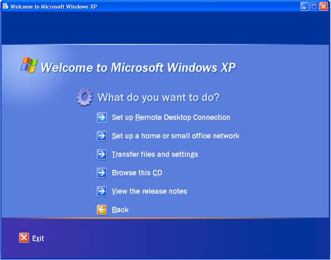
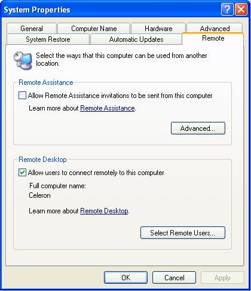
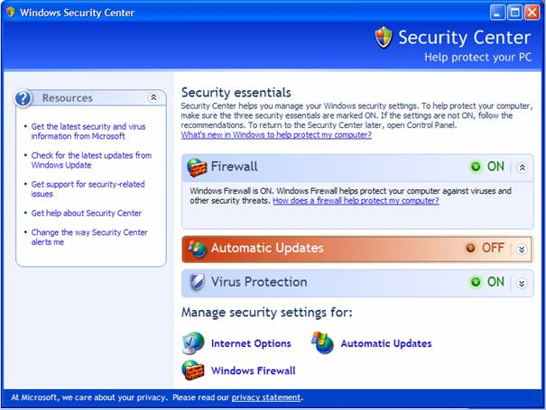
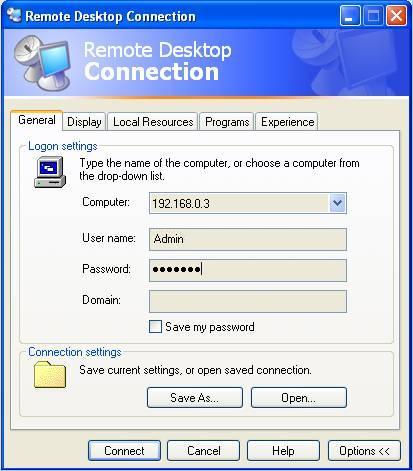
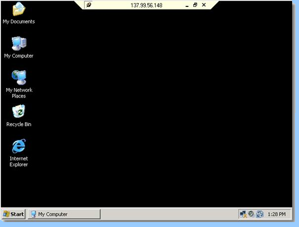
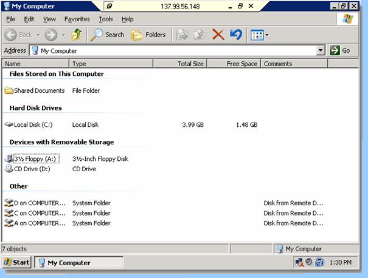

ТЕМА1: Remote Desktop
Описание на Remote Desktop Protocol
Инсталация и основни настройки на Remote Desktop под Windows XP Professional
Въведение
Всеки съвременен компютърен потребител си дава сметка каква част от важната информация се съхранява на неговия личен компютър. И колко пъти се налага точно тази машина да е наоколо – докато потребителя се намира в интернет клуб, в офиса в работата, на гости у приятели или пред преносим компютър. Решение на този проблем са приложенията за отдалечено администриране. Тези приложения позволяват да се ползва личното РС, все едно че сте пред него, макар всъщност да се намирате на километри разстояние. Тук на помощ идва Интернет - глобалната компютърна мрежа, чиито потенциал съвсем не се ограничава с чата, сайтовете и мултимедията.
По концепция Remote Desktop e сходен с много други приложения за отдалечен достъп, като RAdmin, VNC и pcAnywhere. Използвайки тези програми за отдалечен достъп, можете да свържете два компютъра по най-различен начин - от обмен файлове между тях, до синхронизиране съдържанието на цели директории. С помощта на много продукти може да се използва клавиатурата, мишката и монитора на един компютър, а самите задачи да се изпълняват на другия. Клиента вижда не само отдалечената работна площ, но може да мести курсора (мишката), да въвежда текст в диалогови кутии и да кликва върху икони. Подобен софтуер е перфектното средство за специалистите по техническа поддръжка в голяма фирма, защото често не е нужно те да стават от работното си място за да проверяват конфигурацията или да обясняват на обикновения потребител какво да направи. Повечето от тези програмни продукти дават възможност да се работи само в режим на преглед на работната площ, в този случай специалистът по техническа поддръжка е в състояние да проследи действията на потребителя без да се намесва в неговата работа.
Основна грижа при локална или интернет връзка с друг компютър е сигурността на информацията. Възможно е използване на връзка през SSH, при която не остават отворени портове на сървъра, достъпни за неоторизирани потребители.
Съществуват много програмни среди, предлагащи и елегантни графични интерфейси, които улесняват работата с тях и е удобно ползването им дори и от начинаещи потребители.
Повечето програми за отдалечен достъп дават възможност да бъде регулиран трафика по време на сесия, така че да се работи възможно най-добре и при много бавни връзки с интернет. Така отдалечения компютър може да се използва без никакви забавяния на реакцията на десктопа, дори и на 33,6 Kbps Dial-up.
Голямо предимство за Remote Desktop е, че приложението няма нужда да се инсталира и на двата компютъра, както останалите продукти, поради факта че е включено в Windows XP Professional. Единствено е нужна инсталация при Windows XP Home Edition.
Описание на Remote Desktop Protocol
Remote Desktop Protocol (RDP) осигурява отдалечен достъп върху мрежови структури. RDP е проектиран да поддържа различни типове мрежови топологии и многообразни мрежови протоколи.
RDP protocol (RDP 4.0) е представен с Windows NT Server 4.0, Terminal Server Edition. Следващото издание на NT операционна система от Microsoft - Windows 2000 Terminal Services съдържа разширен RDP 5.0. Тази версия добавя поддръжка за много нови свойства като печат върху локални печатащи устройства, осигурява увеличаване на производителността върху ниско скоростни връзки. Версия 5.1 внедрена в Windows XP Professional добавя поддръжка за 24 битов цвят и звук. Версия 5.2 внедрена с Windows Server 2003 включва поддръжка за връзки под конзолен режим. Версия 6.0, която се появи с Windows Vista и Windows Server 2008, също има много нови възможности.
Remote Desktop Protocol (RDP) е създаден на основата на Т-120 фамилия от протоколни стандарти. RDP е многоканален протокол, позволяващ отделяне на виртуалните канали за пренасяне на информация, комуникация между серийни устройства, лицензионна информация, високо криптиране на информация и т.н. RDP е разширение на ядрото на Т- серията протоколи, което му придава няколко архитектурни свойства нужни за поддръжка на многоточкови сесии. Многоточковото предаване на данни позволява данните от приложенията да бъдат доставени в реално време до многобройни точки, без нужда от изпращане за всяка сесия индивидуално.
В първото си издание Windows Terminal Server е съсредоточен в осигуряване на надеждна и бърза point-to-point (едносесийна) връзка. Само един канал за данни се използва в началното издание на Terminal Server 4.0. Все пак гъвкавостта на RDP дава множество възможности за функционалност в бъдещи продукти. RDP притежава даваща възможност за моделиране база, върху която да се изграждат много нововъведения. Протоколът притежава 64000 отделни канала за предаване на данни и ресурси за многоточково предаване на данни. Освен всичко това RDP е проектиран да поддържа много различни видове мрежови топологии, като ISDN, POTS и разнообразни мрежови протоколи като IPX, NetBIOS, TCP/IP. В момента Remote Desktop използва единствено протоколът TCP/IP, но в бъдещи версии могат да се добавят и други.
На сървъра RDP използва свой собствен видео драйвер, обработващ видео-изход чрез изграждане на рендерираща информация предавана чрез мрежови пакети на клиента. На клиента RDP приема рендерираните данни и ги интерпретира в съответстващи на Microsoft Win32 интерфейса за графични устройства (Graphics Device Interface - GDI).
Характеристики на Remote Desktop Protocol
- Encryption (Шифриране) - RDP използва шифъра на RSA Security's, който се нарича RC4. Това е stream(поток от данни) шифър с възможност за криптиране на малки количества от данни. RC4 е предназначен за гарантирана комуникация през мрежа. Windows 2000 позволява на потребителя да избере за шифроване на информация 64- или 128-битов ключ.
- Bandwidth reduction features – RDP поддържа различни механизми за намаляване на количеството информация пренесено през мрежата. Механизмите включват компресиране на данни, постоянно битмап кеширане и кеширане на фрагменти в RAM. Битмап кеширането осигурява значително подобряване на производителността в ниско скоростни връзки.
- Roaming disconnect – Потребителят може ръчно да прекъсне сесията без да излиза от системата чрез “log off”. След това потребителят може автоматично да се свърже наново с неговата изключена сесия когато се логне обратно в системата. Независимо дали това става от същия или от различен компютър. Когато потребителската сесия е неочаквано затворена заради мрежови проблеми или проблеми от страна на клиента, потребителят се изключва но не следва log off.
- Clipboard mapping – Потребителят може да трие и копира текст и графика между приложенията стартирани на локалния компютър и тези който са стартирани в сесията на отдалечения компютър. Така клипборда може да бъде споделен между отдалечения и локалния компютър.
- Print redirection – Приложенията стартирани в сесията могат да отпечатват информация използвайки принтер закачен за клиента.
- Remote control – Потребителят има пълен контрол върху сесията. Споделянето на входна и графична информация дава възможност за диагностика и дистанционно решаване на възникнали евентуални проблеми.
В допълнение Remote Desktop 5.1 добавя следните възможности и предимства:
- - Освен поддръжката за 256 цвята в Remote Desktop 5.1 се добавя поддръжка за 15, 16 и за 24 битов цвят. Все пак локалната видео карта трябва да е способна да възпроизведе такава дълбочина на цвета.
- - Подобрена производителност върху ниско скоростни dial-up връзки.
- - Keyboard hooking – Възможност за използване на специални клавишни комбинации, наречени шорткъти, в режим на цял екран за управление на локалния или отдалечения компютър.
- - Port Redirection – Позволява на приложенията стартирани със сесията да имат достъп директно до локалния сериен и паралелен порт.
- - File System Redirection – Позволява на потребителите да използват техните локални файлове в сесията на Remote Desktop.
- - Redirection of Local Drives – Дисковите устройства на локалния компютър могат да бъдат пренасочени в сесията, така че тези файлове да могат да бъдат лесно прехвърлени между локалният и отдалечения компютър.
- - Sound redirection – Позволява да се стартират аудио-приложения в сесия на Remote Desktop и звукът да се пренасочва към локалния компютър.
Инсталация и основни настройки на Remote Desktop под Windows XP Professional
Има два различни начина за инсталиране на Remote Desktop:
- Инсталация от инсталационния диск на Windows XP Professional
- или чрез сваляне на инсталационния пакет от уеб сайта на Microsoft.
Следната процедура е валидна само в случаите, когато се използва Windows XP Home Edition. Големината на инсталационния пакет от сайта на Microsoft е 3.4 MB. Освен в интернет, инсталационния пакет се намира и на инсталационния CD на Windows XP Professional.
След поставяне на инсталационния компакт диск се появява стартовия екран и се избира Perform additional tasks, а след това Set up Remote Desktop Connection:

Инсталацията започва автоматично с разархивиране на пакета и стартиране на инсталационния помощник:

По подразбиране Remote Desktop е изключен, освен това той не е достъпен под Windows XP Home Edition. Трябва акаунта ви да е с администраторски права за да активирате Remote Desktop, в противен случай следната опция не е достъпна. Разрешава се от System properties > Remote и се избира "Allow users to connect remotely to this computer":

Това позволява потребителите да могат да се свържат отдалечено с този компютър.
Следващата стъпка се състои в позволяване на определени потребители, отдалечен достъп до системата. Това се извършва от "Select Remote Users…":

Всеки потребител с администраторски права автоматично има достъп, останалите потребители трябва да бъдат добавени.
В Microsoft Windows XP Service Pack 2 (SP2), Windows Firewall е включен по подразбиране, така че трябва да се обърне внимание и на неговата настройка. Това се извършва от Control Panel > Security Center > Windows Firewall:

В случай, че Firewall е позволен се блокират всички опити за връзка с компютъра с изключение на отбелязаните в етикета "Еxceptions"(Изключения). Трябва да се убедим, че опцията "Don't allow exceptions" не е маркирана. В този случай не се позволяват изключения и потребителя не се уведомява когато Firewall блокира връзка, за разлика от случая когато тази опция е изключена:

Следващия етикет "Exceptions" съдържа входящите връзки, които се допускат от Windows Firewall:

Тук Remote Desktop трябва да е позволен, за да можем да се свържем с компютъра от разстояние. Ако не е, го избираме и запазваме промените.
При стартирането на Remote Desktop се появява следния прозорец:

В полето "Computer" се въвежда IP адреса или името на компютъра с който искаме да се свържем. Ако отдалечения компютър не е в локалната мрежа, то той трябва да е с публичен (реален) IP адрес.
Има още няколко допълнителни настройки които е добре да се обърне внимание преди да се стартира сесията. За да се направи това се отварят опциите "Options >>":

Етикетът "General" съдържа полета, в които се въвеждат потребителско име и парола, нужни ни за да се свържем с отдалечения компютър. За да има възможност да се използва отново въведената конфигурация, тя може да се съхрани чрез "Save as…".
Етикета "Display" позволява да се настрои размера на работната площ и дълбочината на цвета.:

Тези настройки имат голямо значение, защото в случай на повече цветове и по-голяма резолюция, пренесената информация по мрежата ще има по-голям обем. При бавна връзка се налага ограничение на цветовете. Освен това може да се използва и режим "Full Screen".
Опцията "Display the connection bar when in full screen mode" служи за включване/изключване на специалната лента на връзката в режим на цял екран.
От следващите опции "Local Resources " , могат да се променят звуковите настройки:

Могат да се изпълняват звуци от отдалечения компютър през високоговорителите на локалния компютър.
"Keyboard" опцията позволява използването на различни клавишни комбинации в зависимост от режима на дисплея.
Секцията "Local Devices" дава възможност да се използват дисковите устройства закачени за отдалечения компютър. Това позволява копирането на файлове между двата компютъра.
Също така могат и да се използват и принтери при Remote Desktop сесия. В този случай могат да се отпечатват документи от отдалечения компютър на локалния компютър
От етикета "Programs" се позволява стартирането по време на сесия, на предварително определени програми:

Последния етикет "Experience" помага да се оптимизира връзката и визуалните ефекти да се настроят спрямо нейната скорост:

Изключването на анимации и тапети на работния плот ни позволява да използваме Remote Desktop дори при много бавна връзка.
При завръщане отново в "Generals" могат да се запазят направените оптимизации и те да се използват отново по-късно.
Стартиране на Remote Desktop
След като Remote Desktop връзката е правилно конфигурирана, може да се установи сесия:Докато някой се свързва със системата, чрез Remote Desktop, локалния потребител на отдалечения компютър не може да използва системата.
При свързване с отдалечения компютър се появява прозорец със запитване за потребителско име и парола:
В този случай се изисква потребителско име и парола за акаунт съществуващ на компютъра с който се свързваме а не на локалния компютър.
Ако потребителят не разполага с такъв достъпен за него акаунт, няма да има възможност да се свърже с отдалечената машина.
В горната част на екрана се появява специфична лента (Connection Bar) за Remote Desktop. Върху нея се изписва IP адреса на отдалечения компютър. Чрез натискане на най-левия бутон върху нея, тя може автоматично да се скрие и в този случай нейното появяване е автоматично при приближаване на курсора на мишката към горната част на екрана. Освен това са налични стандартните бутони за минимизиране, максимизиране, възстановяване и затваряне на прозореца за Remote Desktop сесия:

След логване в системата се появява работната площ (десктопа) на отдалечения компютър

Десктопът изглежда по същия начин както и ако сме застанали пред самия компютър и единствената разлика е лентата на връзката в горната част на екрана.
След дабъл клик върху иконата "My Computer" се появява списък на устройствата прикачени към вашия компютър. При използване на Remote Desktop съществува опция за свързване на отдалечени дискови устройства в етикета "Local Resources" на меню "Options". При активиране дисковите устройства на локалния компютър ще се виждат в Remote Desktop сесията на отдалечения компютър:

В примера на фигурата, като локални се виждат A, C и D дискови устройства. Тяхното съдържание може да се разглежда и дори да се копират файлове между локалните и отдалечените устройства. Ако тази опция не е позволена, ще се виждат респективно само дисковите устройства на отдалечения компютър.
По същия начин стои въпросът и с принтери свързани към локалния компютър. При свързване те също ще се появят в Remote Desktop сесията на отдалечения компютър.
Важно е да се отбележи, че отдалечения компютър изисква и драйвери за инсталирания принтер за да може той да се зареди през интернет. Така че печатащите устройства няма да са достъпни докато не бъдат ръчно инсталирани.